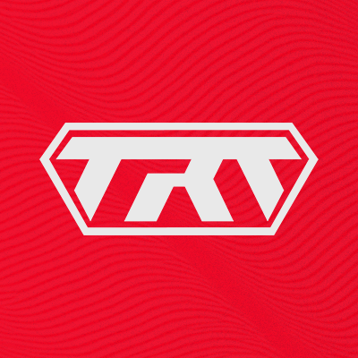

Treta Championship 2026: São Paulo recebe o primeiro Major de 2XKO
O maior evento de jogos de luta da América Latina está de volta. Em 2026, o TRETA Championship se torna oficialmente parte do circuito mundial da Riot Games, trazendo os melhores jogadores do mundo para o Brasil.

Data
15 a 17 de Maio
Local
São Paulo, SP
Premiação
R$ 50.000,00
O Brasil no Topo
Com o lançamento oficial de 2XKO, os pro-players brasileiros mostraram uma adaptação incrível. O TRETA será a prova de fogo para ver se conseguimos manter o troféu em casa contra os invasores internacionais.
Favoritos ao Título
Confira os jogadores que estão dominando o cenário nacional e as duplas que eles pretendem utilizar no torneio:
| Jogador | Dupla Principal | Estilo |
|---|---|---|
| Keoma | Yasuo + Ahri | Técnico / Cadenciado |
| Baka | Vi + Caitlyn | Agressivo / Rushdown |
| Zenith | Ekko + Jinx | Criativo / Setups |
| Darkness | Illaoi + Braum | Defensivo / Wall |
Onde Assistir?
O evento terá transmissão ao vivo pelos canais oficiais do Treta na Twitch e no YouTube, com narração em português e análise técnica de especialistas da comunidade.
Nos vemos no lobby do TRETA!